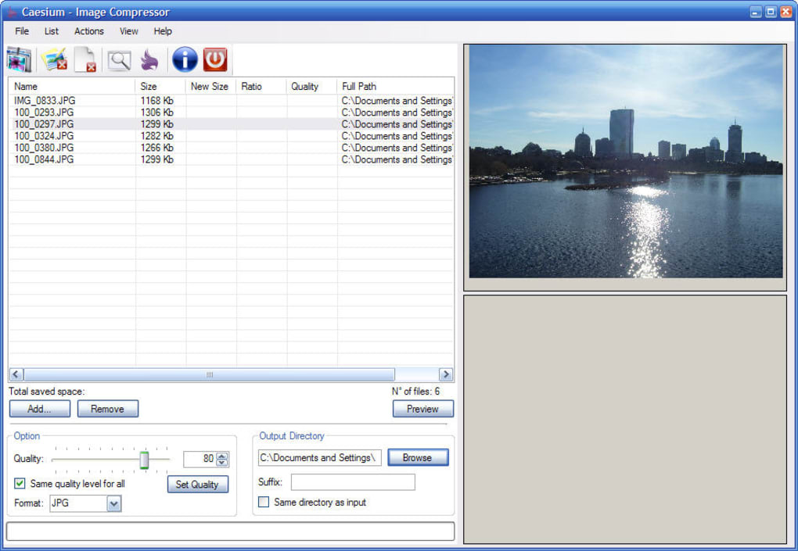

Caesium
Поделиться:
Cesium позволяет сжимать изображения до 90% без видимой потери качества. Предоставляя простой, но эффективный интерфейс с предварительным просмотром в режиме реального времени и одновременной обработкой нескольких изображений, каждый сможет достичь наилучшего результата. Опытные пользователи найдут дополнительные функции, такие как параметры хранения метаданных или поддержку структуры папок.

Операционные системы:
- Windows 7, 8.1, 10 (32/64-bit)